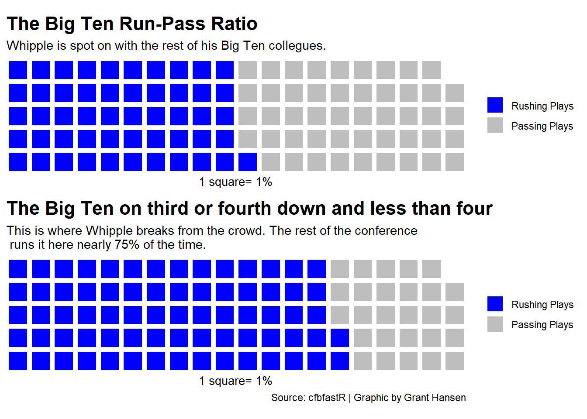

iron(waffle( nurunpass,rows =5,colors =c("red", "black")) +labs(x="1 square= 1%",title ="The Whipple Run-Pass Ratio",subtitle ="Nebraska has ran the football 51% of the time this season.") +theme(plot.title =element_text(size =16, face ="bold"),axis.title =element_text(size =10),axis.title.y =element_blank() ),waffle( nulateshort,rows =5,colors=c("red", "black")) +labs(x="1 square= 1%",title ="Whipple on third/fourth down and less than four",subtitle ="The ratio further favors the run on short, key downs (62%).",caption="Source: cfbfastR | Graphic by Grant Hansen") +theme(plot.title =element_text(size =16, face ="bold"),axis.title =element_text(size =10),axis.title.y =element_blank()))
iron(waffle( bigrunpass,rows =5,colors =c("blue", "grey")) +labs(x="1 square= 1%",title ="The Big Ten Run-Pass Ratio",subtitle ="Whipple is spot on with the rest of his Big Ten collegues.") +theme(plot.title =element_text(size =16, face ="bold"),axis.title =element_text(size =10),axis.title.y =element_blank() ),waffle( biglateshort,rows =5,colors=c("blue", "grey")) +labs(x="1 square= 1%",title ="The Big Ten on third or fourth down and less than four",subtitle ="This is where Whipple breaks from the crowd. The rest of the conference\n runs it here nearly 75% of the time.",caption="Source: cfbfastR | Graphic by Grant Hansen") +theme(plot.title =element_text(size =16, face ="bold"),axis.title =element_text(size =10),axis.title.y =element_blank()))

Time to make a stacked bar chart showing Nebraska’s Run-Pass Ratio week by week.
# A tibble: 6 × 4
# Groups: week, run_pass [6]
week run_pass def_pos_team n
<dbl> <chr> <chr> <int>
1 0 Pass Northwestern 43
2 0 Run Northwestern 29
3 1 Pass North Dakota 22
4 1 Run North Dakota 37
5 2 Pass Georgia Southern 36
6 2 Run Georgia Southern 45
ggplot()+geom_bar(data = nuweektoweek, aes(x=reorder(def_pos_team, week), weight=n, fill=run_pass)) +scale_fill_manual(values =c("black", "red"), name="Play Type")+labs(x="", y="Total Plays", title="Nebraska was balanced almost all season", subtitle="Scott Frost was fired following the loss to Georgia Southern. But, there is little to no change\n in the run-pass ratio once Frost is off the board.", caption="Source: cfbfastR | By: Grant Hansen") +theme_minimal()+theme(plot.title =element_text(size =18, face="bold"),axis.title =element_text(size=10),plot.subtitle =element_text(size=10),plot.title.position ="plot",panel.grid.minor =element_blank())+coord_flip()